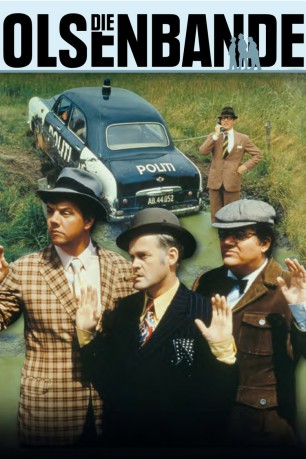

#5399 Olsenbande 01 - Die Olsenbande
 gesehen am 05.02.2017
gesehen am 05.02.2017
 
 IMDB-Wertung: 6.7 / 10
IMDB-Wertung: 6.7 / 10  Metascore: 0
Metascore: 0 
Nach einem missglückten Einbruch wird Egon Olsen aus dem Gefängnis entlassen und hat bereits einen neuen Plan, um an das große Geld zu kommen. Während einer deutschen Kulturwoche im Tivoli will er gemeinsam mit seinen beiden Komplizen Benny und Kjeld das Kernstück der Kronjuwelen der Hohenzollern stehlen. Über die Kanalisation wollen die drei Gauner in das Museum gelangen und sich dann mit dem streng bewachten Schatz nach Spanien abzusetzen. Tatsächlich gelingt dem Trio der Coup, aber auf der Flucht geht ihnen das Benzin aus und der Fluchtwagen wird mit den versteckten Juwelen von der Polizei abgeschleppt. Nachts kann sich die Olsenbande den Schatz zwar vom Fuhrhof der Polizei zurückholen, aber damit ist das Chaos noch lange nicht zu Ende ...
Jahr: 1968
Dauer: 76 Minuten
FSK: 12
Land: Dänemark Studio: VEB Progress Film-VertriebTonspuren:
Untertitel:
Auflösung: 1080p (1808x1080) Größe: 6696 MB
Genre: Komödie, Krimi
Regisseur: Erik Balling
Drehbuch: Martin Gies
Soundtrack:
Darsteller:
 Morten Grunwald als Benny Frandsen
Morten Grunwald als Benny Frandsen- Ove Sprogøe als Egon Olsen
- Poul Bundgaard als Kjeld Jensen
- Peter Steen als Kriminalassistent Mortensen
- Poul Reichhardt als Chefen
- Kirsten Walther als Yvonne Jensen
- Lotte Tarp als Ulla
- Grethe Sønck als Connie
- Hanne Løye als Prostitueret
- Lise Henningsen als Prostitueret
- Ole Monty als Sheriffen
- Paul Hagen als Hansen
- Arthur Jensen als Stationskarl
- Ejner Federspiel als Konduktør
- Poul Thomsen als Politichauffør
- Ulf Pilgaard als Fotograf
- Ebba Amfeldt als Ekspedient i sex-kiosk
- Einar Juhl als Ambassadør
- Valsø Holm als Bondemand
- Gunnar Bigum als Cykelbetjent , uncredited
- Ego Brønnum-Jacobsen als Museumsdirektør , uncredited
- Asger Clausen als Birger Jensen , uncredited
- Edward Fleming als Motorcykelbetjent , uncredited
- Lone Gersel als Prostitueret , uncredited
- Benny Hansen als Motorcykelbetjent , uncredited
- Sten Hasager als Motorcykelbetjent , uncredited
- Knud Hilding als Mand ved færgested , uncredited
- Jes Holtsø als Børge Jensen , uncredited
- Perry Knudsen als Mand ved busstoppested , uncredited
- Ernst Meyer als Tankpasser , uncredited
- Claus Nissen als Motorcykelbetjent , uncredited
- Bjørn Puggaard-Müller als Kriminalbetjent med pornobøger , uncredited
- Søren Rode als Mand ved busstoppested , uncredited
- Bjørn Spiro als Mand der bliver skygget , uncredited
- Gunnar Strømvad als Nattevagt , uncredited
Datei: X:\7+mehr(A-Z)\Olsenbande\Olsenbande 01 - Die Olsenbande (1968, FSK12, 1808x1080).mkv seit 27.01.2017
Festplatte: HD Collection-7+mehr(A-Z)+Person
 Es gibt insgesamt 17 Filme in der Gruppe '7+mehr(A-Z)\Olsenbande'
Es gibt insgesamt 17 Filme in der Gruppe '7+mehr(A-Z)\Olsenbande'